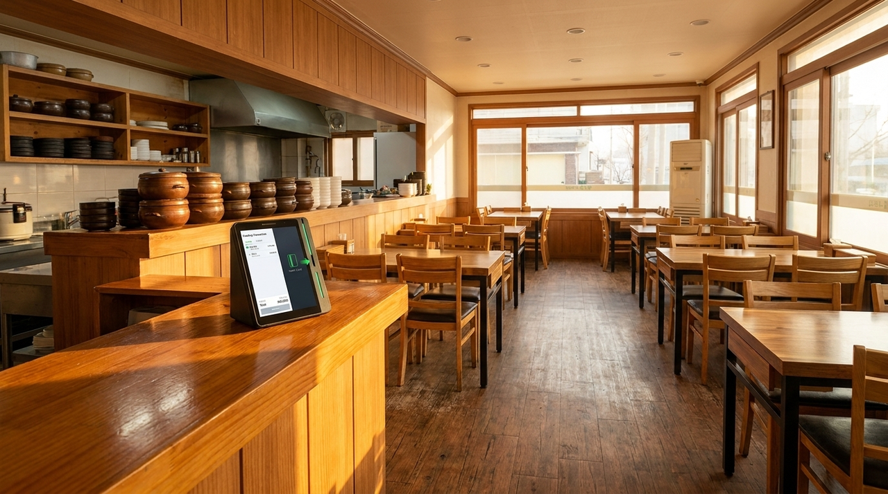
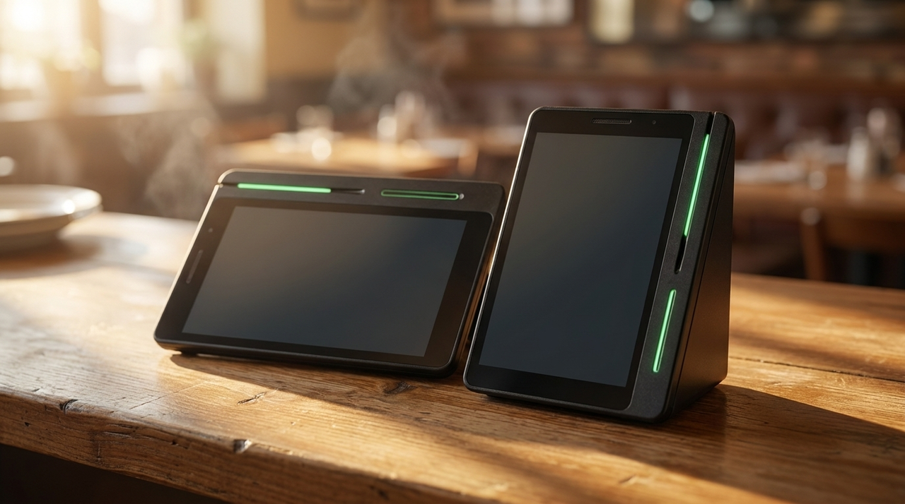
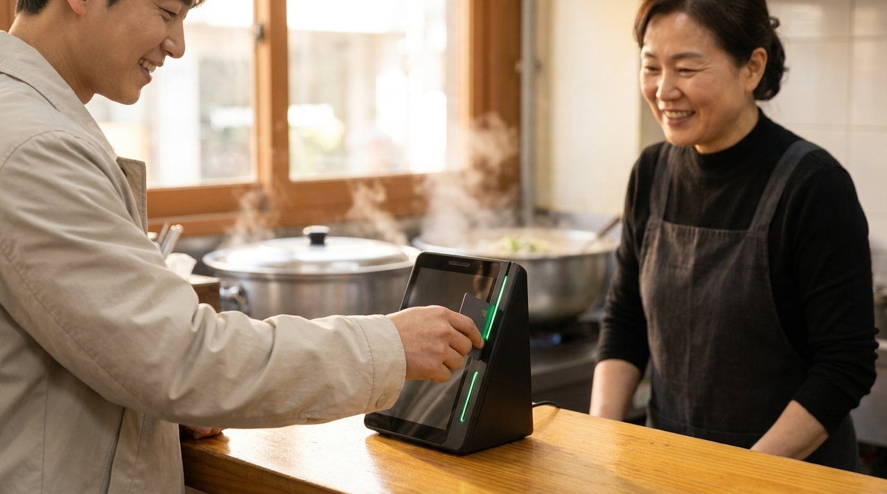

손님이 몰리는 날, 계산대에서 줄이 생기는 진짜 이유
국밥집처럼 회전이 빠른 식당은 손님이 몰리는 날 계산대 앞에 줄이 생깁니다. 대개는 손님이 많아서라고 생각하시지만, 저희가 성수기 매장을 다니며 확인한 바로는 줄의 상당 부분은 결제 한 건이 끝나는 데 걸리는 시간에서 나왔습니다. 한 건에 10초가 더 걸리면 열 명이면 100초입니다. 자리가 비기를 기다리는 손님이 밖에 있다면 그 100초는 그대로 매출입니다. 이 글에서는 몰리는 날 계산대에서 실제로 무엇이 시간을 잡아먹는지 정리했습니다.

몰리는 날에는 평소에 안 보이던 것이 보입니다
한가할 때는 결제 한 건이 몇 초 더 걸려도 티가 나지 않습니다. 그래서 평소에는 문제라고 느끼지 못합니다. 그런데 손님이 몰리면 그 몇 초가 뒤로 계속 쌓입니다. 열 명이 이어지면 눈에 보이는 줄이 됩니다.
그래서 성수기 대비는 손님이 몰릴 때 하는 것이 아니라 한가할 때 계산대를 정리해 두는 일입니다. 몰리는 날에 손보려 하면 그날은 이미 늦습니다.
무엇이 시간을 잡아먹는지는 매장마다 다릅니다. 어떤 곳은 결제 수단을 확인하는 과정에서, 어떤 곳은 영수증 처리에서, 어떤 곳은 계산대 위치와 동선에서 시간이 샙니다. 그래서 대비도 매장마다 다른 곳을 봐야 합니다.
계산대에서 시간이 새는 지점들
첫째, 결제 수단마다 동작이 다른 경우입니다. 손님이 무엇을 꺼내느냐에 따라 사장님이 눌러야 하는 것이 달라지면, 그 판단 시간만큼 늦어집니다. 몰리는 날에는 이 판단이 실수로 이어지기도 합니다.

둘째, 계산대 자리와 동선입니다. 나가는 손님과 들어오는 손님이 같은 자리에서 만나면 줄이 실제보다 길어 보입니다. 국밥집처럼 자리 회전이 중요한 식당은 이 동선 하나로 체감이 크게 달라집니다.
셋째, 마감 준비를 낮에 하지 못하는 경우입니다. 영수증 용지가 떨어지거나, 잔돈이 부족하거나, 기기가 느려지면 가장 바쁜 시간에 손이 멈춥니다. 이런 일은 대개 예고 없이 몰리는 날에 생깁니다. 성수기 사고는 성수기에 준비하지 않은 것들에서 나옵니다.
몰리는 날 전에 점검할 목록
| 점검 항목 | 확인 내용 |
|---|---|
| 결제 동작 통일 | 손님이 뭘 꺼내도 같은 동작으로 끝나는지 |
| 계산대 동선 | 나가는 손님과 기다리는 손님이 겹치지 않는지 |
| 영수증 용지 | 여유분 위치를 모두가 아는지 |
| 취소·환불 절차 | 바쁜 시간에도 바로 처리 가능한지 |
| 직원 숙지 | 계산대를 볼 사람이 모두 같은 방법을 아는지 |
| 매출 확인 자리 | 그날 결과를 한 화면에서 볼 수 있는지 |
이 여섯 가지를 한가한 날 한 번만 점검해 두시면 몰리는 날의 체감이 달라집니다. 특히 다섯 번째, 직원이 모두 같은 방법을 아는지가 실제로는 가장 크게 작용합니다.

줄이 짧아지면 손님 수가 늘어납니다
식당에서 회전은 곧 매출입니다. 자리가 한정된 매장에서는 더욱 그렇습니다. 결제가 빨라져 한 테이블이 몇 분 일찍 비면, 그 자리에 다음 손님이 앉습니다. 이것이 하루에 몇 번 반복되면 하루 손님 수가 달라집니다.
밖에서 기다리는 손님도 마찬가지입니다. 줄이 길어 보이면 그냥 지나가는 손님이 생깁니다. 실제 대기 시간보다 보이는 줄의 길이가 판단에 더 크게 작용합니다. 계산이 빨리 끝나 줄이 짧아 보이면 들어오는 손님이 늘어납니다.
명절이나 연휴처럼 일 년에 몇 번뿐인 대목에는 이 차이가 크게 벌어집니다. 그날 하루의 매출이 평소 며칠 치가 되기 때문에, 계산대에서 새는 시간의 값도 그만큼 커집니다.
준비는 한가한 날에, 확인은 대목 다음 날에
성수기 대비에서 자주 빠지는 것이 하나 있습니다. 대목이 끝난 다음 날의 확인입니다.
그날 정신없이 보내고 나면 대개 그대로 넘어갑니다. 그런데 바로 다음 날에 잠깐만 돌아보면 다음 대목이 훨씬 수월해집니다. 몇 시에 가장 몰렸는지, 어느 지점에서 손이 멈췄는지, 무엇이 모자랐는지. 기억이 선명할 때 적어 두면 다음에 그대로 쓸 수 있습니다.
특히 매출을 시간대별로 나눠 보시면 체감과 다른 부분이 드러납니다. 정신없었던 시간과 실제로 매출이 가장 높았던 시간이 다른 경우가 꽤 있습니다. 그러면 사람을 어디에 더 두어야 하는지 판단이 달라집니다.
국밥집처럼 명절과 추운 계절에 대목이 몰리는 업종은 이 기록이 매년 쌓입니다. 작년 기록이 있으면 올해는 준비만 하면 되고, 없으면 매년 같은 자리에서 같은 일을 겪습니다. 대목은 한 번 겪을 때마다 자산이 되어야 합니다.
저희는 성수기가 지난 뒤에도 연락드려 어땠는지 여쭙습니다. 그때 나온 이야기가 다음 구성을 정하는 근거가 되기 때문입니다.
마지막으로 하나만 더 말씀드리면, 대목에 가장 흔한 사고는 큰 고장이 아니라 사소한 준비 부족이었습니다. 용지 한 롤, 잔돈 한 통, 콘센트 하나. 이런 것들이 가장 바쁜 시간에 손을 멈추게 합니다. 몰리는 날 아침에 오 분만 들여 확인해 두시면 대부분 막을 수 있는 일입니다.
자주 묻는 질문
Q. 계산대를 늘리는 게 나을까요?
자리와 인력에 따라 다릅니다. 한 대에서 걸리는 시간을 줄여 해결되는 경우도 많아, 먼저 어디서 시간이 새는지 확인한 뒤 판단하시길 권합니다.
Q. 직원이 자주 바뀌는데 어떻게 준비하나요?
결제 동작이 하나로 통일되어 있으면 가르칠 것이 줄어듭니다. 새로 오신 분도 첫날부터 계산대를 볼 수 있게 됩니다.
Q. 몰리는 시간이 언제인지 정확히 모르겠습니다.
매출을 시간대별로 나눠 보시면 대개 분명하게 드러납니다. 생각과 다른 경우도 많아, 한 번 확인해 보시길 권합니다.
Q. 비용은 어떻게 되나요?
매장 구성과 필요한 기기에 따라 달라져 상담 시 직접 공급가로 안내해 드립니다. 네이버단말기는 약정 없이 이용하실 수 있습니다.
대목은 그날 준비하는 것이 아닙니다
손님이 몰리는 날은 미리 알 수 있습니다. 명절, 연휴, 날씨가 추워지는 시기. 그날 계산대에서 몇 초씩 새는 것을 막으려면 한가한 지금 점검해 두어야 합니다. 지금 계산대에서 무엇이 가장 오래 걸리는지, 몰리는 시간이 언제인지만 알려 주시면 어디부터 손보면 좋을지 함께 찾아 드리겠습니다. 정품 신제품 보증, 수도권은 직접 방문해 설치하고 관리해 드립니다.
- 📞 전화상담 1544-7754
- 🌐 홈페이지 https://nwpos.co.kr

📷 인스타그램 팔로우 https://www.instagram.com/nurinetworkspos

▶️ 유튜브 구독 https://www.youtube.com/@nurinetworks